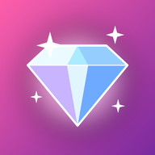
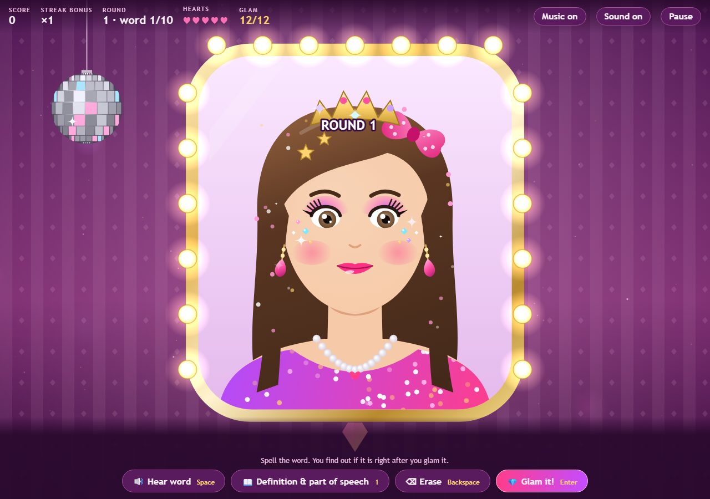
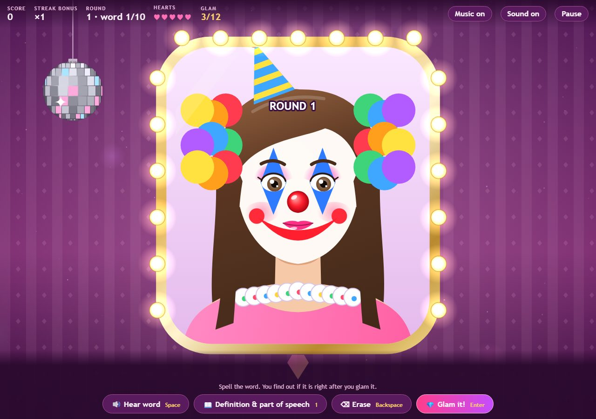
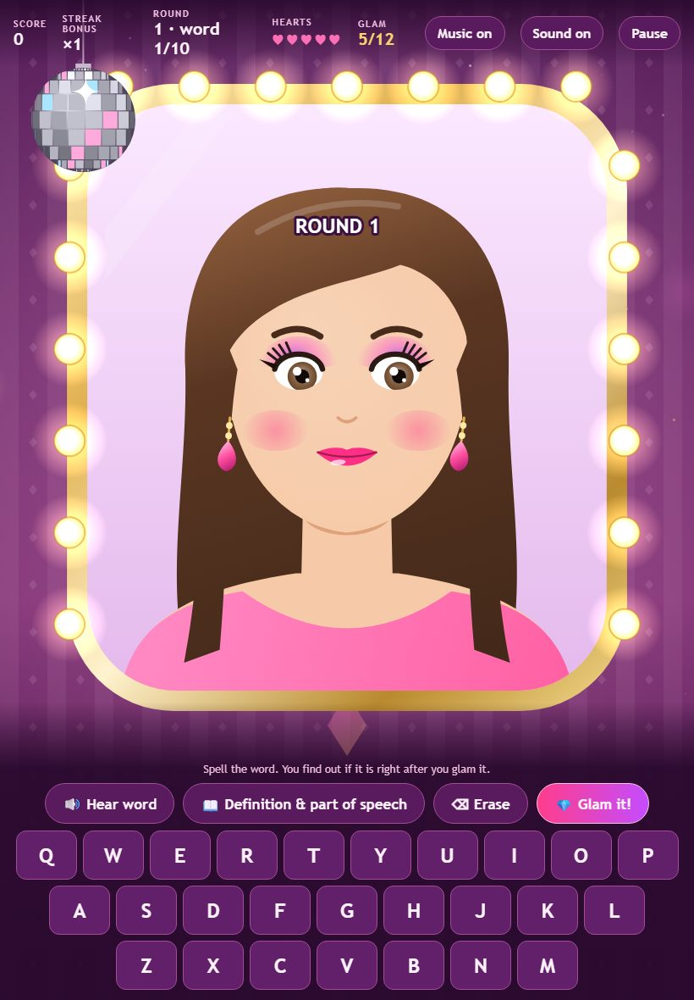

Spelling Glam!!!
Time to glam up! Spell the real words from the 2026 Scripps National Spelling Bee. Every correct word adds more glam: lip gloss, blush, earrings, face gems, all the way up to a tiara. Miss one and… honk honk, clown makeup!
Mac app works on Apple Silicon and Intel Macs. Free, no ads, works offline.



Install on a Mac
- Click Download for Mac and open Spelling-Glam.dmg.
- Drag Spelling Glam into the Applications folder.
- The first time only: Control-click (or right-click) Spelling Glam in Applications, choose Open, then click Open again. On newer macOS, if it still won't open, go to System Settings → Privacy & Security, scroll down, and click Open Anyway. (This is needed because the app is free and not registered with Apple.)
No download? You can also open the browser version in Safari and choose File → Add to Dock, which makes it an app too.
Play on an iPad
- Open this page in Safari on the iPad and tap Play in your browser.
- Tap the Share button, then Add to Home Screen. It gets its own icon, opens full screen, and keeps working offline.
How to play
- Listen to the word (Space to hear it again), type the spelling, then press Glam it! (Enter).
- Need a hint? Definition & part of speech (1).
- Like a real bee, you only find out if you are right after you glam it.
- Pick a word list (Round 1, Quarterfinals, Semifinals & Finals, or the Championship Spell-off), the bee rules, and your glam girl's look.
- Words you miss go to the Touch-up Station list so you can practice them.